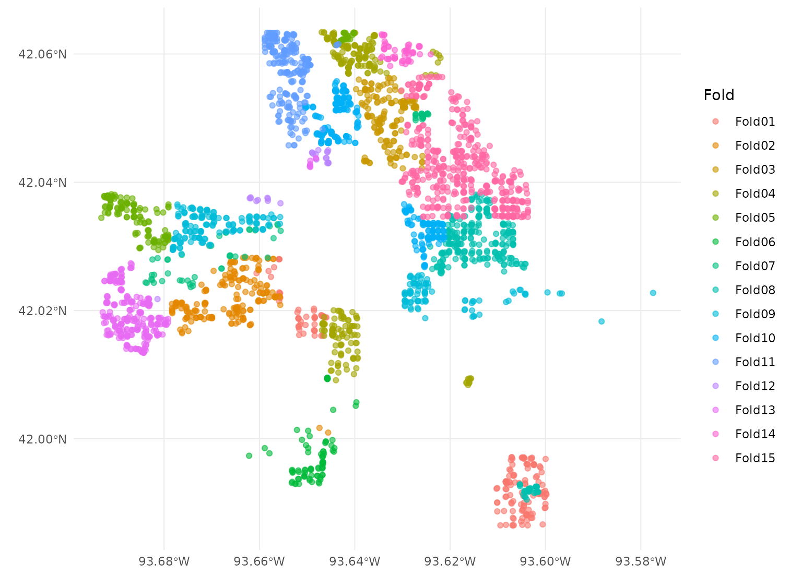

The resampled objects created by spatialsample can be used in many of the same ways that those created by rsample can, from making comparisons to evaluating models. These objects can be used together with other parts of the tidymodels framework, but let’s walk through a more basic example using linear modeling of housing data from Ames, IA.
data("ames", package = "modeldata")Let’s say that the sale price of these houses depends on the year they were built, their living area (size), and the type of house they are (duplex vs. townhouse vs. single family), along with perhaps interactions between type and house size.
log10(Sale_Price) ~ Year_Built + Gr_Liv_Area + Bldg_TypeThis relationship may exhibit spatial autocorrelation across the city of Ames, and we can use a spatial resampling strategy to evaluate such a model. We can create v = 15 spatial cross-validation folds with spatial_clustering_cv(), which uses k-means clustering to identify the sets:
library(spatialsample)
set.seed(123)
folds <- spatial_clustering_cv(ames, coords = c("Latitude", "Longitude"), v = 15)
folds
#> # 15-fold spatial cross-validation
#> # A tibble: 15 x 2
#> splits id
#> <list> <chr>
#> 1 <split [2738/192]> Fold01
#> 2 <split [2654/276]> Fold02
#> 3 <split [2717/213]> Fold03
#> 4 <split [2762/168]> Fold04
#> 5 <split [2829/101]> Fold05
#> 6 <split [2779/151]> Fold06
#> 7 <split [2718/212]> Fold07
#> 8 <split [2756/174]> Fold08
#> 9 <split [2706/224]> Fold09
#> 10 <split [2794/136]> Fold10
#> 11 <split [2694/236]> Fold11
#> 12 <split [2779/151]> Fold12
#> 13 <split [2728/202]> Fold13
#> 14 <split [2616/314]> Fold14
#> 15 <split [2750/180]> Fold15The folds object is an rset object that contains many resamples or rsplit objects in the splits column. The resulting partitions do not necessarily contain an equal number of observations.
Now let’s write a function that will, for each resample:
# `splits` will be the `rsplit` object
compute_preds <- function(splits) {
# fit the model to the analysis set
mod <- lm(log10(Sale_Price) ~ Year_Built + Bldg_Type * log10(Gr_Liv_Area),
data = analysis(splits))
# identify the assessment set
holdout <- assessment(splits)
# return the assessment set, with true and predicted price
tibble::tibble(Longitude = holdout$Longitude,
Latitude = holdout$Latitude,
Sale_Price = log10(holdout$Sale_Price),
.pred = predict(mod, holdout))
}We can apply this function to just one of the splits.
compute_preds(folds$splits[[7]])
#> # A tibble: 212 x 4
#> Longitude Latitude Sale_Price .pred
#> <dbl> <dbl> <dbl> <dbl>
#> 1 -93.7 42.0 5.37 5.45
#> 2 -93.7 42.0 5.26 5.37
#> 3 -93.7 42.0 5.31 5.42
#> 4 -93.7 42.0 5.16 5.07
#> 5 -93.7 42.0 5.28 5.37
#> 6 -93.7 42.0 5.00 5.06
#> 7 -93.7 42.0 5.10 4.99
#> 8 -93.7 42.0 5.29 5.36
#> 9 -93.7 42.0 5.18 5.18
#> 10 -93.7 42.0 5.23 5.29
#> # … with 202 more rowsOr we can apply this function to all of the splits, using purrr::map().
library(purrr)
library(dplyr)
#>
#> Attaching package: 'dplyr'
#> The following objects are masked from 'package:stats':
#>
#> filter, lag
#> The following objects are masked from 'package:base':
#>
#> intersect, setdiff, setequal, union
cv_res <- folds %>%
mutate(.preds = map(splits, compute_preds))
cv_res
#> # 15-fold spatial cross-validation
#> # A tibble: 15 x 3
#> splits id .preds
#> <list> <chr> <list>
#> 1 <split [2738/192]> Fold01 <tibble [192 × 4]>
#> 2 <split [2654/276]> Fold02 <tibble [276 × 4]>
#> 3 <split [2717/213]> Fold03 <tibble [213 × 4]>
#> 4 <split [2762/168]> Fold04 <tibble [168 × 4]>
#> 5 <split [2829/101]> Fold05 <tibble [101 × 4]>
#> 6 <split [2779/151]> Fold06 <tibble [151 × 4]>
#> 7 <split [2718/212]> Fold07 <tibble [212 × 4]>
#> 8 <split [2756/174]> Fold08 <tibble [174 × 4]>
#> 9 <split [2706/224]> Fold09 <tibble [224 × 4]>
#> 10 <split [2794/136]> Fold10 <tibble [136 × 4]>
#> 11 <split [2694/236]> Fold11 <tibble [236 × 4]>
#> 12 <split [2779/151]> Fold12 <tibble [151 × 4]>
#> 13 <split [2728/202]> Fold13 <tibble [202 × 4]>
#> 14 <split [2616/314]> Fold14 <tibble [314 × 4]>
#> 15 <split [2750/180]> Fold15 <tibble [180 × 4]>We can unnest() these results and use yardstick to compute any regression metrics appropriate to this modeling analysis, such as yardstick::rmse():
library(tidyr)
library(yardstick)
#> For binary classification, the first factor level is assumed to be the event.
#> Use the argument `event_level = "second"` to alter this as needed.
cv_rmse <- cv_res %>%
unnest(.preds) %>%
group_by(id) %>%
rmse(Sale_Price, .pred)
cv_rmse
#> # A tibble: 15 x 4
#> id .metric .estimator .estimate
#> <chr> <chr> <chr> <dbl>
#> 1 Fold01 rmse standard 0.122
#> 2 Fold02 rmse standard 0.0983
#> 3 Fold03 rmse standard 0.104
#> 4 Fold04 rmse standard 0.0660
#> 5 Fold05 rmse standard 0.142
#> 6 Fold06 rmse standard 0.0849
#> 7 Fold07 rmse standard 0.0686
#> 8 Fold08 rmse standard 0.0674
#> 9 Fold09 rmse standard 0.113
#> 10 Fold10 rmse standard 0.0669
#> 11 Fold11 rmse standard 0.0859
#> 12 Fold12 rmse standard 0.106
#> 13 Fold13 rmse standard 0.0814
#> 14 Fold14 rmse standard 0.0837
#> 15 Fold15 rmse standard 0.0868It looks like the RMSE may vary across the city, so we can join the metrics back up to our results and plot them.
library(ggplot2)
cv_res %>%
unnest(.preds) %>%
left_join(cv_rmse) %>%
ggplot(aes(Longitude, Latitude, color = .estimate)) +
geom_point(alpha = 0.5) +
labs(color = "RMSE") +
scale_color_viridis_c()
#> Joining, by = "id"
The area of highest RMSE is close to a more industrial area of Ames, by a large Department of Transportation complex.